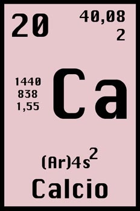

CALCIO:

Se encuentra en el medio interno de los organismos como ion calcio (Ca2+) o formando parte de otras moléculas; en algunos seres vivos se halla precipitado en forma de esqueleto interno o externo. Los iones de calcio actúan de cofactor en muchas reacciones enzimáticas, intervienen en el metabolismo del glucógeno, y junto al potasio y el sodio regulan la contracción muscular. El porcentaje de calcio en los organismos es variable y depende de las especies, pero por término medio representa el 2,45% en el conjunto de los seres vivos; en los vegetales, sólo representa el 0,007%.
 Ir a página principal
Ir a página principal